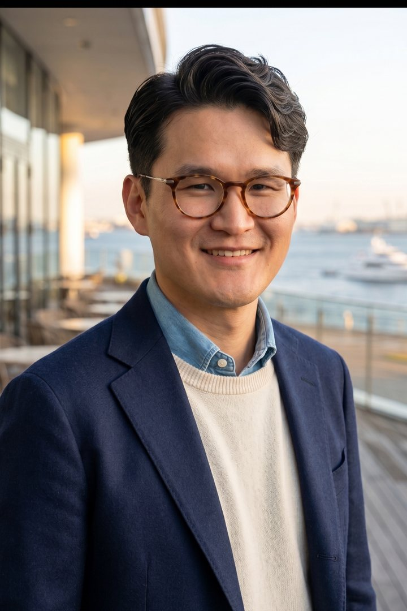

小島泰寛
Representative Partner
代表パートナーとして、クライアントリレーションと変革全体の設計をリードします。
Company & Team
AI時代の経営判断を、現場で動く仕組みへ。
私たちは、AI導入そのものではなく、経営と現場がより速く、より精度高く判断できる状態をつくることに焦点を置いています。
Company
LUTC Consulting（ルトゥック コンサルティング）は、Lean Utility & Task Coordination の思想に基づき、企業の複雑な業務、分散した知識、属人的な意思決定を再設計するAIドリブン・コンサルティングファームです。
私たちは、AIを単なる業務効率化ツールとしてではなく、企業の意思決定、業務運営、組織学習、成長戦略を支える新たな経営アーキテクチャとして捉えています。日本における活動拠点を神奈川県小田原市のARUYO ODAWARAに置き、全国の企業を支援しています。


Representative Partner
AIは、単体のツールではなく、組織が持つ知識、業務、顧客接点、判断基準を再構成するための経営インフラです。LUTC Consultingは、経営の意図と現場の実務を接続し、構想が実際の業務成果へ変わるところまで伴走します。
Team
戦略から実装・定着までを、多様なバックグラウンドを持つ少数精鋭のプロフェッショナルチームが近い距離で支援します。
代表パートナーとして、クライアントリレーションと変革全体の設計をリードします。
All Members
Operating Principles
私たちの支援は、見栄えのよい提案書をつくることではなく、クライアントの組織が明日から判断と実行を変えられる状態をつくることです。
何を自動化するかではなく、誰が、どの情報で、どの判断を変えるべきかを明確にします。
暗黙知、業務ノウハウ、判断基準をAIと人が扱える形へ整理します。
導入後に現場で使われる運用、ルール、教育、改善のサイクルを先に設計します。
戦略から実装、定着までを分断せず、成果が見える実行単位へ落とし込みます。